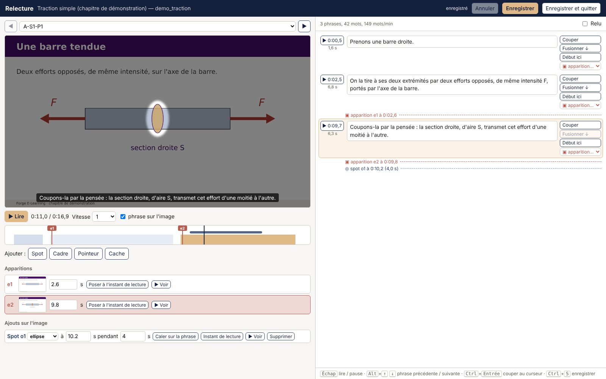
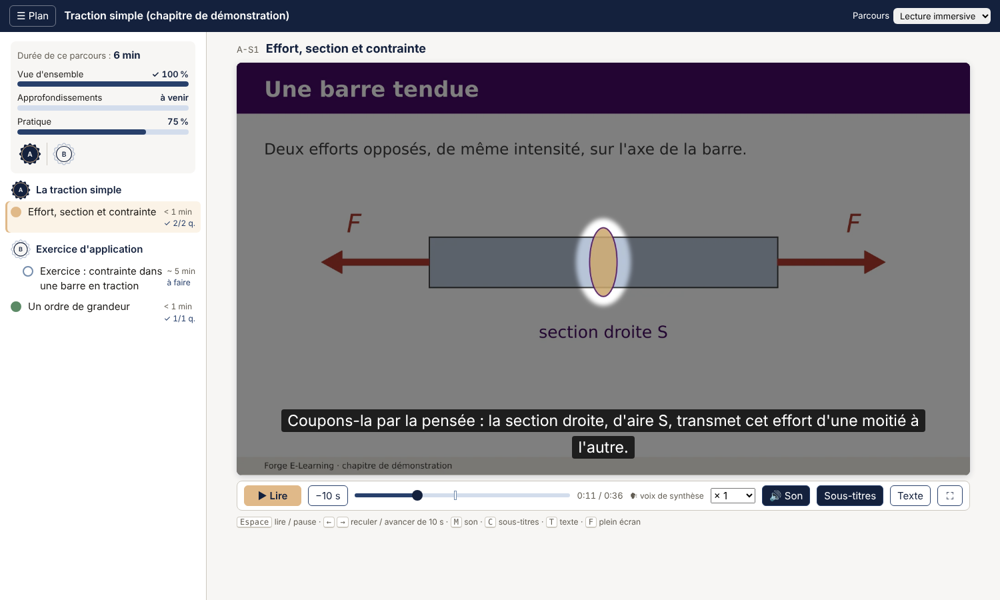
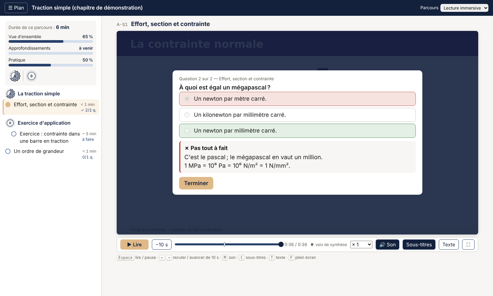
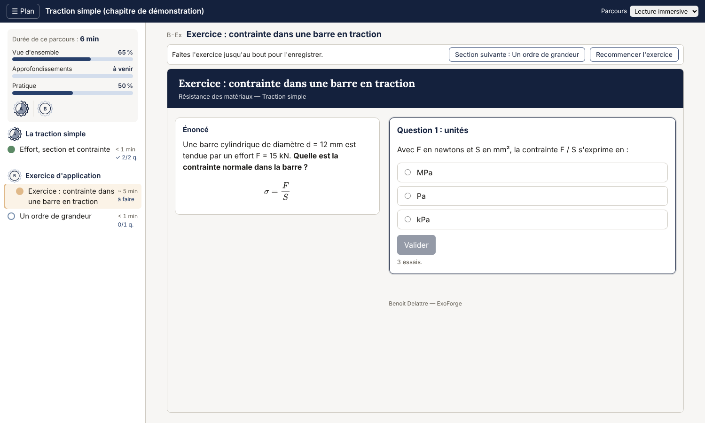

CapsuleForge#


CapsuleForge produit des capsules : des cours et des didacticiels interactifs, décrits dans un fichier texte (chapitre.yaml, voir FORMAT.md). Une capsule part d’un diaporama PowerPoint narré, d’une vidéo, d’un enregistrement d’écran ou d’une manipulation enregistrée dans un logiciel (FreeCAD, ABAQUS, Excel…), et peut mêler ces sources ; elle reçoit des questions QuizForge, des exercices ExoForge, des sous-titres, une traduction et une voix de synthèse. Le fichier texte est la seule référence : on le relit, on le corrige, et le lecteur HTML (ou le paquet SCORM) est reconstruit à chaque fois.
Une capsule est découpée en parties et en sections de quelques minutes, avec plusieurs parcours, des questions en fin de section et des exercices ; elle se lit dans un lecteur HTML ou se dépose dans Moodle en paquet SCORM. Un didacticiel montre une manipulation puis la fait faire (« Regarder » puis « À vous ») : il remplace le mode « simulation interactive » d’ActivePresenter sans son défaut principal (une diapositive par action, à la durée de l’enregistrement). Les premiers didacticiels étaient écrits pour un ancien lecteur (capsule.yaml) ; AtelierForge les met à jour pour le lecteur actuel (dernière partie de cette page).
Statut : outil en développement, utilisé sur un chapitre pilote. Essayés en conditions réelles : reprise d’un diaporama narré, transcription, relecture, lecteur de chapitre, questions et exercices, paquets SCORM 2004 et 1.2 dans Moodle, traduction et voix de synthèse, import de vidéo, enregistrement d’écran. Pas encore : caméo dans le lecteur, éditeur d’assemblage, simulation ActivePresenter dans le chapitre, export H5P. L’état détaillé est sur la page « État des outils » du site.
Dans cette page, capsuleforge … abrège python scripts/capsuleforge/capsuleforge.py …, lancé depuis le dossier du dépôt. Un nom seul (fiabilite) désigne le dossier data/capsuleforge/fiabilite/. Sous Windows, le plus simple est AtelierForge (double-clic sur Forge.bat, à la racine du dépôt), écran « Capsules » : on choisit la capsule, son état s’affiche section par section (diapositives reprises, images, texte dit, relu, traduction, voix, questions) et chaque étape se lance par un bouton (reprendre un diaporama, importer une vidéo, transcrire, relire, traduire, faire la voix, vérifier, construire avec ou sans paquets SCORM), sans ligne de commande. Un double-clic sur scripts/capsuleforge/CapsuleForge.bat ouvre aussi un menu qui pose les questions une à une (enregistrer, construire, vérifier, reprendre un diaporama, relire…), sans ligne de commande.
Préparer une capsule#
Chaîne#
capsuleforge nouvelle cours --titre … --diaporama cours.pptx crée la capsule : plan proposé (parties = sections PowerPoint, sections de quelques minutes)
chapitre.yaml plan : parties, sections, renvois aux diapositives (proposé par nouvelle, corrigé à la main ou avec un assistant d'IA)
capsuleforge plan fiabilite plan par parcours, durées
capsuleforge pptx cours.pptx --chapitre fiabilite diapositives → pas : images, sons, apparitions, annotations « cf … » (Windows, PowerPoint)
capsuleforge transcrire fiabilite premier jet du texte dit (Whisper, sur cet ordinateur)
capsuleforge relire fiabilite relecture : texte, phrases, apparitions, spots, cadres, caches
capsuleforge construire fiabilite --scorm parties lecteur HTML et paquets SCORM pour Moodle
capsuleforge traduire / voix traduction, sous-titres, voix de synthèse
Des vidéos (video) et des enregistrements d’écran (filmer) entrent dans les mêmes sections que les diapositives.
Le fichier chapitre.yaml : parties, sections, pas#
Le chapitre est décrit dans FORMAT.md : des parties (tronc, annexes, exercices), des sections de 5 à 6 min et des pas qui sont des scènes (fond, objets, gestes attendus, retours), avec plusieurs parcours sur le même contenu (par exemple vue d’ensemble, lecture détaillée, lecture immersive). Une section renvoie aux diapositives qui la composent (source: {fichier: cours.pptx, diapos: [6, 7]}) ; un chapitre en cours d’écriture porte source: {statut: squelette} (une section encore vide n’est alors qu’un avertissement).
capsuleforge plan fiabilite plan par parcours : noms (B-S2-P4), durées, annexes, questions
capsuleforge plan fiabilite --parcours immersive
capsuleforge verifier fiabilite erreurs et avertissements
Reprendre un diaporama PowerPoint narré#
capsuleforge pptx Fiabilite.pptx --chapitre fiabilite # toutes les diapositives citées par le chapitre
capsuleforge pptx Fiabilite.pptx --chapitre fiabilite --diapos 6-12 # seulement celles-ci
Chaque diapositive citée par une section devient un pas : image de départ et une image par clic d’animation (produites par PowerPoint lui-même, sous Windows), son de la narration enregistrée dans PowerPoint, durée. Chaque clic devient une apparition, répartie d’abord sur la durée de la diapositive (PowerPoint n’enregistre pas l’instant des clics) puis réglée dans la relecture. Les notes de la diapositive servent de premier texte dit. Relancer la commande après une modification du diaporama garde le texte déjà relu, les instants réglés et les ajouts de la relecture. Le journal est écrit dans pptx_journal.txt du chapitre et l’ancien chapitre est copié dans sauvegardes/. --sans-images reprend la structure et les sons sans piloter PowerPoint ; --largeur fixe la largeur des images.
Annoter dans PowerPoint (formes « cf … »)#
Les spots, cadres et pointeurs se dessinent aussi dans PowerPoint, sur la diapositive : on trace la forme, puis on la renomme dans le volet Sélection (Accueil > Organiser > Volet Sélection) :
Nom de la forme |
Ce qu’elle devient |
|---|---|
|
zone éclairée, le reste assombri (rectangle ou ellipse) |
|
zone entourée (rectangle ou ellipse) |
|
zone masquée jusqu’à un instant réglé dans la relecture ; non repris si un cache de la relecture couvre déjà la zone |
|
point lumineux ; tracé en trait ou en forme libre (ligne brisée), il suit ce trajet, du premier point au dernier |
Le nom peut être suivi de ce que l’on veut (cf pointeur moyennes). Ces formes ne sont jamais sur les images, et leurs animations éventuelles sont ignorées. capsuleforge pptx … les relit à chaque passage : leur forme vient du diaporama, leur instant et leur durée se règlent dans la relecture et sont gardés. Une apparition qui manque se remet comme animation PowerPoint ordinaire, puis on relance capsuleforge pptx. Limites : formes hors d’un groupe, sans rotation.
Transcrire le texte dit#
capsuleforge transcrire fiabilite # pas qui n'ont pas encore de texte
capsuleforge transcrire fiabilite --modele medium # plus juste, plus lent
capsuleforge transcrire fiabilite --sections dimensionnement --refaire
La narration de chaque pas est transcrite sur cet ordinateur (Whisper, via faster-whisper ; rien n’est envoyé en ligne). Le résultat est un premier jet, à corriger dans la relecture : les mots horodatés sont gardés dans transcriptions/<pas>.json et servent à placer les phrases dans le temps. Un pas qui a déjà un texte n’est pas retranscrit, sauf avec --refaire.
Relire le texte dit#
capsuleforge relire fiabilite (ou CapsuleForge.bat, choix 7)
Ouvre dans le navigateur la diapositive, le son et le texte dit, phrase par phrase. On corrige une phrase en l’écoutant (bouton ▶ de la phrase), on la coupe au curseur (Ctrl+Entrée), on la fusionne avec la suivante, on règle son début sur l’instant de lecture. Les apparitions se posent à l’instant de lecture, au début d’une phrase, ou en faisant glisser leur repère rouge sur la piste. « Relu » marque le pas comme relu par l’auteur.

Sous la piste, « Ajouter » pose sur l’image ce que le diaporama n’a pas : un spot (zone éclairée, le reste assombri), un cadre, un pointeur (point lumineux) ou un cache (zone masquée jusqu’à un instant donné, pour une apparition absente du diaporama). On place le curseur dans une phrase, on choisit le type, on trace sur l’image : l’ajout prend le début et la durée de la phrase. Il se déplace à la souris, se règle dans la liste, se supprime par Suppr.
Touches : Échap lit ou met en pause (même depuis un texte), Alt+↑ ou ↓ joue la phrase voisine, Ctrl+S enregistre. « Enregistrer et quitter » arrête la relecture et libère la fenêtre de commande ; fermer l’onglet a le même effet au bout de quelques secondes.
Les remarques de verifier sur le pas ouvert (phrase mal placée dans le temps, phrase après la fin du son, fond ou son introuvable…) s’affichent en haut de la colonne des phrases, et un « ⚠ » marque les pas concernés dans la liste ; elles sont recalculées à chaque enregistrement.
Les phrases horodatées (phrases du pas) sont la seule source de la narration et des sous-titres. À la première ouverture, elles sont préparées à partir de la narration et de la transcription ; rien n’est écrit avant « Enregistrer » (l’ancien chapitre est copié dans sauvegardes/).
Importer une vidéo (enregistrement d’écran, export ActivePresenter, clip)#
capsuleforge video capture.mp4 --chapitre fiabilite --section dimensionnement/approche
capsuleforge video demo.mp4 --chapitre tuto1 --section principale/esquisse --titre "Créer une esquisse" # nouvelle section
capsuleforge video export_AP.mp4 --chapitre fiabilite --section applications/train --debut 12 --fin 95 --remplacer
capsuleforge video Video_281.MP4 --son audio_284.mp4 --chapitre tuto1 --section principale/abaqus --remplacer # son à part (ActivePresenter)
ActivePresenter range le son à part de la vidéo (audio_NNN.mp4 à côté de Video_NNN.mp4) : --son le reprend, le remet dans la vidéo comprimée et s’en sert pour la découpe. Une vidéo sans son est découpée en pas réguliers d’au plus --pas-max secondes.
La vidéo (MP4, MKV, MOV, WEBM…) est comprimée une fois dans videos/ du chapitre (H.264, qualité --qualite 28 par défaut — 23 plus belle et plus lourde, 32 plus légère —, largeur au plus celle de l’écran du chapitre, 30 images/s au plus), puis découpée en pas aux silences de la voix (--pas-min 20 --pas-max 90 secondes ; --decoupe aucune = un seul pas). Chaque pas (v01, v02…) a son image d’affiche et son propre son : transcrire, relire (phrases, spots, cadres, pointeurs, caches posés sur l’image d’affiche), traduire et voix fonctionnent comme pour une diapositive. Dans le lecteur, la vidéo est jouée muette et suit l’horloge du son du pas : avec une voix traduite, elle accélère ou ralentit un peu pour couvrir la même durée. Une section peut mêler des diapositives PowerPoint et des pas vidéo. Il faut PyAV (av, déjà requis pour le MP3).
Filmer l’écran, le micro et la webcam (Windows)#
capsuleforge filmer --appareils # écrans, caméras, micros
capsuleforge filmer --tester-micro # niveau de la voix (4 s)
capsuleforge filmer tuto1 --section principale/demo --titre "Démonstration" # écran principal + micro
capsuleforge filmer tuto1 --section principale/demo --webcam --ecran 2 # + webcam (caméo), second écran
capsuleforge filmer tuto1 --sans-import --duree 60 # fichiers seulement, sans section
capsuleforge cameo tuto1 --position bas-gauche --taille 0.2 # place du médaillon dans le lecteur
La section est vérifiée avant de filmer : elle doit exister (partie/section), ou être créée dans une partie existante avec --titre. Compte à rebours de 3 s (1 bip au départ), puis enregistrement : Ctrl+Maj+P pause / reprise (2 bips), Ctrl+Maj+F ou Entrée dans la fenêtre de commande : fin (3 bips). Écran (20 images/s, --ips), micro (le premier trouvé, ou --micro "nom") et webcam (la première, hors caméra infrarouge, ou --webcam "nom") sont filmés chacun dans un fil, sur une horloge commune dont les pauses sont retirées : ils restent calés (le retard d’ouverture du micro est complété par du silence). Fichiers bruts dans <chapitre>/enregistrements/<date>/, puis import automatique comme capsuleforge video (pas vidéo découpés aux silences ; la webcam est attachée à chaque pas comme caméo, champ camera). --sans-import garde les fichiers sans les importer (la section n’est alors pas demandée ; la commande d’import est affichée) ; --duree 60 arrête seul. Les bips passent par la sortie son de l’ordinateur : avec des haut-parleurs, le micro peut les entendre. Seul PyAV est utilisé (pas d’OBS). Le lecteur montre la webcam en médaillon (caméo) calé sur la vidéo ; l’élève peut le masquer (bouton « Caméo », touche V) ; capsuleforge cameo règle sa position, sa taille et sa forme (rond ou rectangle) ; --position aucune ne le montre pas (la webcam reste dans le chapitre). --tester-micro écoute le micro 4 s et donne le niveau de la voix : « bon » au-dessus de −28 dBFS ; plus bas, rapprocher le micro ou monter son volume (Windows : Paramètres > Son > Entrée). À l’import, une voix faible est relevée vers −20 dBFS (au plus +30 dB, sans saturer) ; le souffle du micro monte avec elle.
Construire le lecteur d’un cours#
capsuleforge construire fiabilite
Pour un dossier qui contient chapitre.yaml sans capsule.yaml, la commande produit dist/capsuleforge/<nom>/index.html : plan du chapitre à gauche (sections vues, à venir), choix du parcours, image avec ses apparitions, spots, cadres, pointeurs et caches, sous-titres tirés des phrases, texte de la section cliquable, vitesse, plein écran. La lecture s’arrête en fin de section et propose la suivante ; l’avancement est gardé dans le navigateur. Les images sont converties en WebP et les sons en MP3 mono (environ 0,5 Mo par minute) ; --audio origine recopie les sons tels quels. En fin de section, le lecteur pose les questions tirées de la banque QuizForge désignée par la section (vrai/faux, QCM, numérique), avec leurs rétroactions ; « proposées », elles peuvent être passées, « obligatoires », non. En tête du plan : trois jauges (vue d’ensemble, approfondissements, pratique) et un disque par partie (secteurs = sections lues, anneau ondulé = pratique, badge quand tout est fait).


Exercices ExoForge#
Une partie peut porter un exercice ExoForge : exercice: {outil: exoforge, fiche: fiabilite_coef_securite.yaml, duree_min: 15} (fiche cherchée à côté du chapitre, puis dans data/exoforge). À la construction, la fiche est reconstruite par ExoForge si elle (ou le moteur) a changé, ses fichiers sont copiés dans exercices/<id>/ à côté du lecteur, et l’exercice devient la dernière section de la partie. Une annexe peut porter du cours et un exercice ; une partie type: exercice peut n’avoir aucune section et s’appelle comme une annexe (annexes: [exo_biellette] sur une section). L’exercice n’est proposé que par les parcours exercices: true (Lecture immersive). Le lecteur l’affiche dans un cadre et lui sert de plateforme SCORM : terminé, il compte dans « Pratique », et le plan affiche le meilleur score ; les réponses sont gardées dans le navigateur (journal exercices) pour les futures traces.

Paquets SCORM pour Moodle#
capsuleforge construire fiabilite --scorm chapitre # un paquet pour tout le chapitre
capsuleforge construire fiabilite --scorm parties # un paquet par partie du tronc (avec ses annexes et exercices)
capsuleforge construire fiabilite --scorm tout # les deux
capsuleforge construire fiabilite --scorm chapitre --scorm-version 1.2 # même paquet au format SCORM 1.2
Paquets SCORM 2004 écrits dans dist/capsuleforge/ : fiabilite_scorm2004.zip, fiabilite_B_dimensionnement_scorm2004.zip… À déposer dans Moodle comme activité « Paquet SCORM ». Dans la plateforme, le lecteur :
garde l’avancement chez elle (sections vues, questions, scores d’exercices, parcours, dernière section) et le reprend à la séance suivante, sur n’importe quel ordinateur ; ce que le navigateur garde hors plateforme est ignoré (pas de mélange entre étudiants sur un poste partagé) ;
déclare l’activité achevée quand toutes les sections du tronc ont été vues (progression = part du tronc vue, pondérée par la durée) ;
renvoie une note sur 100 = la pratique, pondérée : chaque question pèse 1 et compte 1 si elle a été juste au moins une fois ; chaque exercice pèse son
poids(entréeexercicedu chapitre ; par défaut sa durée en minutes) et compte son meilleur score ; ce qui n’est pas fait compte 0 ; la même pratique compte quel que soit le parcours ; pas de note tant que rien n’est fait.poids: 0garde l’exercice pour la rétroaction et les traces sans le noter ; pour noter un exercice pour lui-même, déposer son propre paquet ExoForge ;envoie une interaction par section vue (
lecture:…), par question répondue (question:…, réponse et bonne réponse) et par réponse d’exercice (exercice:<id>:…, plus son score) : elles apparaissent dans le rapport de l’activité et serviront à DiagForge.
Réglages Moodle conseillés : méthode d’évaluation « Note la plus élevée » ; nombre de tentatives illimité sans « Forcer une nouvelle tentative » (l’avancement continue la même tentative) ; achèvement « l’étudiant doit terminer l’activité » (statut achevé) et, si on le veut, « recevoir une note ». Moodle ne prend officiellement en charge que SCORM 1.2 ; ses fonctions SCORM 2004 sont partielles mais couvrent ce qui est utilisé ici (données de suspension, note, achèvement, interactions), et les paquets 2004 y ont fonctionné.
SCORM 1.2 (--scorm-version 1.2, paquets …_scorm12.zip) : même lecteur, même note, même achèvement et mêmes interactions, dans le vocabulaire de SCORM 1.2. Différences : l’avancement gardé par la plateforme est limité à 4 096 caractères (au-delà, les sections vues les plus anciennes sont oubliées ; largement assez pour un chapitre de quelques dizaines de sections) ; pas de mesure de progression ; pas de description des interactions ; la bonne réponse d’une question numérique est envoyée comme une valeur, sans sa tolérance. Le lecteur reconnaît seul la version de la plateforme. Préférer SCORM 1.2 pour une plateforme autre que Moodle, ou si un paquet 2004 pose problème.
Une partie annexe appelée par aucune partie du tronc n’entre dans aucun paquet par partie (la construction le signale).
Traduire, sous-titrer, faire parler une voix de synthèse#
Traduire (fichier d’échange, puis import) :
capsuleforge traduire fiabilite --langue en # écrit traductions/en.yaml (source, cible, relu) capsuleforge traduire fiabilite --langue en --moteur argos # pré-remplit les cibles vides (gratuit, hors ligne) capsuleforge traduire fiabilite --langue en --importer # recopie les cibles dans chapitre.yaml
Pour relire :
capsuleforge traduire fiabilite --langue en --relireouvre un écran dans le navigateur — l’original avec la diapositive et le son de la phrase (Échap), la traduction à corriger, la voix de synthèse de la phrase si elle existe ; ✓ Fait (Ctrl+Entrée) valide et passe au texte suivant, Zap (Ctrl+→) passe sans changer le statut, « ↺ À relire » remet en attente ; filtre « Non relus seulement », progression, enregistrement continu danstraductions/en.yaml, bouton « Importer dans le chapitre ». (Le fichier reste modifiable à la main.) Moteurs :aucun(cibles vides : traduction à la main, ou par un assistant d’IA, à relire),argos(Argos Translate, gratuit, sur cet ordinateur :uv pip install argostranslate),deepl(clé dansDEEPL_AUTH_KEY; l’offre API Free a un quota gratuit). Une cible déjà écrite n’est jamais remplacée ; une phrase corrigée depuis dans la relecture est signalée et laissée de côté. Les textes deviennent{fr: …, en: …}danschapitre.yaml; la relecture garde les traductions des phrases qu’on ne modifie pas.Voix de synthèse :
capsuleforge voix fiabilite --langue en # Piper, voix en_GB-alan-medium capsuleforge voix fiabilite --langue fr # pas sans enregistrement (diapositives neuves) seulement capsuleforge voix fiabilite --langue en --moteur edge # voix Microsoft Edge (en ligne, gratuite, texte envoyé à Microsoft)
Piper :
uv pip install piper-tts; la voix est téléchargée à la première utilisation dansdata/capsuleforge/_voix/. Voix par défaut :fr_FR-tom-medium,en_GB-alan-medium(autres :--voix en_US-ryan-high…, liste sur le site de Piper). Edge :uv pip install edge-tts(voixfr-FR-HenriNeural,en-GB-RyanNeural…). La voix est fabriquée phrase par phrase avec des silences proches de l’original : les instants de chaque phrase sont connus, et le lecteur recale sous-titres, apparitions, spots et pointeurs. Sons dansaudio/voix/<pas>.<langue>.wav. Un pas n’est refait que si son texte a changé (--refairepour forcer). En langue source, un pas qui a un enregistrement n’est jamais remplacé ; une narration sans phrases est découpée en phrases.Lecteur : menus « Voix » et « Sous-titres » dans l’en-tête, indépendants (ta voix avec des sous-titres anglais, ou tout en anglais) ; les titres suivent la langue des sous-titres ; la mention « 🗣 voix de synthèse » s’affiche pendant un passage synthétisé. L’interface du lecteur (boutons, plan, jauges, écrans de début et de fin, questions : libellés « Valider », « Vrai/Faux »…) suit la langue des sous-titres : français, ou anglais pour toute autre langue (dictionnaire
UIde lecteur_chapitre.html, à compléter pour d’autres langues). Les titres des parcours se traduisent comme les autres textes. Les questions QuizForge et les exercices ExoForge du chapitre se traduisent avec le reste :traduireajoute leurs textes au fichiertraductions/<langue>.yaml(clésquestion/…etexercice/…, même écran de relecture) ; la banque et la fiche ne sont pas modifiées. À la construction, le lecteur reçoit les questions traduites et une version traduite de chaque exercice (textes de la fiche et boutons du moteur en anglais ; sans le commentaire audio, enregistré dans la langue source). Une question ou une fiche modifiée depuis sa traduction garde son texte d’origine (la construction le signale) : relancertraduire. Limites : les textes calculés par des expressions dans la fiche (lignes de tableau) restent dans la langue source ; l’interface du moteur ExoForge n’est traduite qu’en anglais.
Didacticiel dans le lecteur de chapitre#
Les pas de didacticiel (captures de l’enregistreur, chapitres convertis d’une capsule) se jouent dans le même lecteur que les cours et les vidéos : capsuleforge construire tuto1 --lecteur 2. Regarder : la souris va à la zone (arc ou trajet enregistré), clique, tape la saisie, la bulle et le cadre apparaissent ; c’est une fonction du temps du pas, donc la piste, le saut, la pause et la vitesse marchent comme pour un cours. À vous (bouton de la barre, visible dans une section qui a des gestes) : la bulle donne la consigne, l’étudiant fait le geste (clic, double-clic, clic droit, molette, glisser, touche, saisie, variantes ou), avec les essais, l’indice et les retours du chapitre (reglages) ; bilan « Réussi du premier coup » en fin de section ; une interaction geste:… par pas dans la plateforme. « À vous » est la pratique du didacticiel : une section faite jusqu’au bout en « À vous » compte dans la jauge « Pratique » et l’anneau de la partie (plan : « ✋ 83 % », meilleure tentative) ; dans la note SCORM, elle pèse sa durée en minutes (au moins 1 ; une question pèse 1) et compte la part des gestes réussis du premier coup. Les masques du chapitre (barre des tâches…) sont floutés sur les images. Pas encore : formules LaTeX dans les bulles, narration d’étape lue par la voix du navigateur.
Ancien lecteur : didacticiels enregistrés (capsule.yaml)#
Chaîne#
capsuleforge enregistrer freecad_pad (Windows : souris, clavier, accessibilité de Windows)
│ data/capsuleforge/freecad_pad/ journal.jsonl + images/ + capsule.yaml
▼
capsuleforge editer freecad_pad (éditeur visuel : bulles, zones, étapes, narration, durées, ajouts)
▼
capsuleforge construire freecad_pad dist/capsuleforge/freecad_pad/index.html + images/
capsuleforge approj projet.approj reprend une simulation déjà enregistrée dans ActivePresenter (lecture seule : le projet est copié avant d’être lu).
Enregistrer#
Double-cliquer sur scripts/capsuleforge/CapsuleForge.bat, choix 1, ou :
python scripts/capsuleforge/capsuleforge.py enregistrer freecad_pad --titre "FreeCAD : premier corps extrudé" --application FreeCAD
Après un compte à rebours de 3 s, passer dans l’application et faire la manipulation normalement.
Raccourci |
Effet |
Signal |
|---|---|---|
Ctrl+Maj+E |
nouvelle étape : le pas suivant ouvre une étape (à faire à chaque idée nouvelle, règle biard2018) |
1 bip |
Ctrl+Maj+P |
pause / reprise (avant de taper un mot de passe, ou pour préparer l’écran) |
2 bips |
Ctrl+Maj+F |
fin |
3 bips |
Ces raccourcis sont interceptés : l’application enregistrée ne les reçoit pas. Pas de touches F1-F12 par défaut : sur un portable ou un clavier compact, elles demandent la touche Fn et commandent souvent le système (F8 peut ouvrir le panneau d’émojis ou activer le mode avion selon le clavier). Autre choix possible : --touche-etape f8 --touche-pause f9 --touche-fin f10.
Ce qui est enregistré pour chaque action : l’image de l’écran juste avant l’action, la trajectoire de la souris depuis l’action précédente, et le contrôle visé tel que l’accessibilité de Windows le décrit (nom, type, rectangle). Actions reconnues : clic, double-clic, clic droit, clic molette, glisser, molette, saisie au clavier (le texte tapé), touche ou raccourci (Entrée, Ctrl+S…).
Quand l’application n’expose pas ses contrôles (vue 3D, OpenGL, certaines interfaces d’ABAQUS), le pas reste valide : la zone de clic est un rectangle de 120 × 48 px autour du clic et la bulle vaut « Cliquez ici. ». capsuleforge verifier liste ces pas à réécrire. ActivePresenter fait la même chose (3 pas sur 9 dans un projet d’essai).
Actions écartées automatiquement (ignorer: true et raison dans le YAML, absentes du lecteur) : clics dans la barre des tâches ou la zone de notification, raccourcis Windows (Win+…), menus du système. Les actions faites dans un autre programme que le programme principal sont seulement signalées (autre_programme: true) : à garder ou à écarter. Pour écarter un pas à la main (clic raté, hésitation), ajouter ignorer: true dans son bloc : plus sûr que de le supprimer.
Quand le clic tombe dans un conteneur (vue 3D, fenêtre, panneau) plutôt que sur un contrôle, la bulle reste générique et le nom du conteneur est noté pour information (cible.dans).
Précautions : l’écran entier est capturé (écran 1 par défaut, --ecran 2 pour le second) ; fermer la messagerie et ce qui ne doit pas apparaître, ou déclarer des masques ensuite. Les frappes au clavier sont enregistrées tant que l’enregistrement n’est pas en pause.
Le fichier capsule.yaml#
format: capsuleforge/1
titre: "FreeCAD : premier corps extrudé"
langue: fr
ecran: {largeur: 2560, hauteur: 1600, echelle: 1.5} # pixels de l'écran enregistré
reglages:
mode: les_deux # demonstration | pratique | les_deux (boutons « Regarder » et « À vous »)
essais: 3 # essais en mode À vous avant de montrer la zone
masques: # zones floutées sur toutes les images : [x, y, largeur, hauteur]
- [0, 170, 200, 1150]
etapes:
- titre: Créer l'esquisse
narration: |
On crée une esquisse sur le plan XY : c'est le profil que l'on extrudera ensuite.
arret: true # arrêt en fin d'étape, bouton « Continuer » (false : enchaîne)
# audio: audio/etape1.mp3 (facultatif : remplace la narration lue par le navigateur)
pas:
- id: p001
action: clic # clic | double_clic | clic_droit | clic_milieu | glisser | molette | saisie | touche
image: images/p001.png
point: [182, 121]
cible: {nom: Pad, type: ButtonControl, cadre: [160, 100, 48, 44], origine: accessibilite}
bulle: Cliquez sur le bouton **Pad**.
trajet: [[640, 410, 0], [300, 200, 420], [182, 121, 900]]
duree_ms: 2300 # temps passé à l'enregistrement (information)
- id: p002
action: saisie
texte: "20"
# …
image_finale: images/fin.png
Ce qu’on modifie à la main :
les étapes : titre, narration (texte lu par la voix du navigateur en aperçu, affiché au-dessus de l’écran), arrêt ;
le regroupement : pour fusionner deux étapes, supprimer les lignes
- titre,narration,arret,pas:de la seconde ; pour couper, insérer ces quatre lignes entre deux pas ;les bulles : texte court,
**gras**pour le nom du contrôle ;les zones :
cible.cadresi la zone proposée est mauvaise (coordonnées lisibles dans n’importe quel visualiseur d’images) ;les masques ;
les réponses attendues d’une saisie :
texteest la réponse ; « 100 », « 100 mm », « 100,0 » sont acceptés d’office ;accepte: [cent]ajoute d’autres formes,tolerance: 0.01un écart relatif ;les pas à regarder seulement :
observer: true(la molette l’est d’office, car un défilement ne se refait pas sur une image fixe) ; en mode À vous, un bouton « Continuer » remplace l’action ;supprimer un pas inutile (clic raté, hésitation) : supprimer son bloc ; son image peut rester dans
images/.
Ce qu’on ne modifie pas : trajet (la trajectoire est rejouée en 0,45 à 1,5 s, quelle que soit l’hésitation enregistrée), id.
capsuleforge assembler freecad_pad refait le YAML depuis journal.jsonl sans écraser les corrections : il écrit capsule_reassemblee.yaml si capsule.yaml existe.
Modifier la capsule dans l’éditeur#
python scripts/capsuleforge/capsuleforge.py editer tuto1
ou CapsuleForge.bat, choix 5. L’éditeur s’ouvre dans le navigateur ; il passe par un petit serveur qui ne répond qu’à cet ordinateur (laisser la fenêtre de commande ouverte, Ctrl+C pour arrêter). Rien ne sort du poste.
Image (à gauche) : le pas sélectionné, avec sa zone (à glisser, ou à redimensionner par les coins), le point du clic, la bulle (à glisser pour la placer ; pointillés = position choisie à la main) et le déplacement du curseur tel que le lecteur le jouera (arc en pointillé depuis le pas précédent). « Redessiner la zone » et « Nouveau masque » se tracent à la souris.
Propriétés (à droite) : onglet Pas (type, bulle, réponse attendue d’une saisie, touche, zone, durée à la lecture, comportement en mode « À vous »), onglet Étape (titre, narration avec sa durée estimée, arrêt), onglet Capsule (titre, modes, essais, masques).
Chronologie (en bas) : un groupe par étape, un bloc par pas, de largeur proportionnelle à sa durée à la lecture ; la vignette montre l’endroit cliqué. Cliquer un bloc le sélectionne (flèches ← →), le glisser le déplace, y compris vers une autre étape ; tirer son bord droit règle sa durée (double-clic : retour à la durée calculée). La barre sous le titre de l’étape compare la durée de la narration à celle des pas : rouge quand la narration est plus longue, et « Caler les pas sur la narration » (onglet Étape) allonge alors chaque pas dans la même proportion.
Ajouter un élément non enregistré : choisir le type (montrer une zone sans geste, clic, saisie de texte, touche, glisser, image importée) puis « + avant » ou « + après ». Une image importée (diapositive exportée de PowerPoint, capture) est ramenée à la taille de l’écran de la capsule et donne un pas « montrer » : une capsule peut ainsi mêler diapositives commentées et manipulations.
Écarter (touche Suppr) retire un pas du lecteur sans le supprimer ; seuls les pas ajoutés se suppriment. « Couper l’étape ici » et « Fusionner avec la précédente » règlent le découpage.
Enregistrer (Ctrl+S) écrit
capsule.yaml; la première fois de chaque séance, l’ancien fichier est copié danssauvegardes/. Ctrl+Z / Ctrl+Y annulent et rétablissent. Aperçu enregistre, construit le lecteur et l’ouvre sur le pas sélectionné.
Durées : sans réglage, un pas dure le temps du déplacement du curseur (0,45 à 1,5 s selon la distance), du geste et de la lecture de la bulle (1,8 à 5 s selon sa longueur). Le curseur suit un arc direct ; le trajet enregistré, avec ses hésitations, n’est rejoué que si on le demande (pas par pas, ou pour toute la capsule).
Champs écrits par l’éditeur : action: montrer, lecture_s, bulle_position, trajectoire: enregistree, indice, cible.origine: manuelle, identifiants a001… pour les pas ajoutés.
Construire et utiliser le lecteur#
python scripts/capsuleforge/capsuleforge.py construire freecad_pad [--largeur 1920] [--format webp]
Sortie : dist/capsuleforge/freecad_pad/index.html et images/, à ouvrir dans un navigateur (fonctionne aussi depuis le disque). --largeur réduit les images, --format webp les compresse sans perte (environ deux fois plus légères).
Le lecteur propose :
Regarder : le curseur se déplace, la zone visée est encadrée au moment du clic (signalement, sans clignotement), la bulle s’affiche, la saisie se tape ; arrêt en fin d’étape avec « Revoir l’étape », « Faire cette étape » ou « Continuer » ;
À vous : l’étudiant refait l’action (bon bouton de la souris, double-clic, glisser, molette, texte à taper, raccourci) ; après 3 essais la zone est montrée ; bilan « réussi du premier coup » en fin d’étape ;
un sommaire des étapes cliquable, une vitesse 1,25× (pas 1,5×, liu2024), la voix du navigateur en aperçu de la narration ;
clavier : Espace (lecture/pause), flèches (pas précédent/suivant).
Les essais de chaque pas sont gardés dans window.capsuleTraces (pour le futur paquet SCORM et DiagForge).
Reprendre un projet ActivePresenter#
python scripts/capsuleforge/capsuleforge.py approj data/sources/projet.approj --nom ap_demo
Repris : image de chaque diapositive, trajectoire de la souris, zone de clic et nom du contrôle, type d’action. Non repris : audio, objets ajoutés à la main, mise en forme des légendes. Unités d’ActivePresenter 10 : millièmes de pixel.
Mettre à jour pour le lecteur actuel#
capsuleforge convertir tuto1 capsule.yaml -> chapitre.yaml (l'original n'est pas touché)
capsule.yaml reste la source tant que l’éditeur visuel ne lit que lui ; chapitre.yaml se refait par convertir. Quand les deux fichiers existent, construire prend le plus récent (ou --lecteur 1|2).
À venir (dans l’ordre proposé)#
Caméo (vidéo de l’enseignant en médaillon) dans le lecteur, calé sur le pas ; recalage d’un caméo filmé à part par comparaison des sons.
Simulation ActivePresenter (gestes, mode « À vous ») dans le chapitre.
Éditeur d’assemblage du chapitre (sources mêlées, chronologie, objets).
Lecture des traces SCORM dans DiagForge ; objectifs SCORM par section.
Export H5P ; thème modifiable (couleurs et polices du profil).
Le plan d’ensemble est sur la page « Prochaines étapes » du site.
Licence : GPL v3 (code).